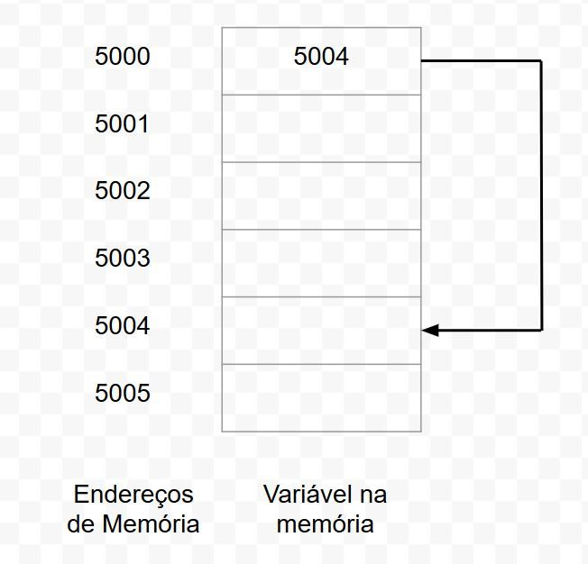
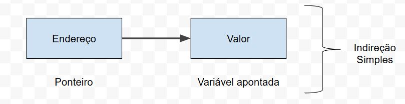
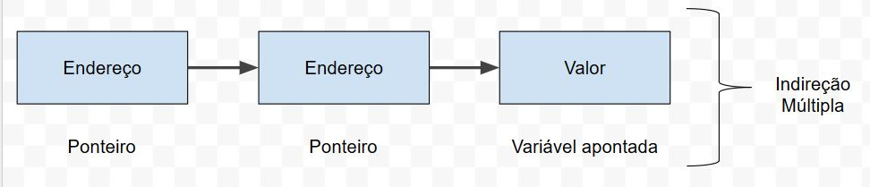

Quando usamos passagem de parâmetros para a função main, podemos chamar um programa através do terminal pelo nome, podendo enviar um valor, que pode ser tratado dentro do programa através de dois parâmetros, argc e argv, na função main.
A int argc guarda a quantidade de parâmetros informados (1, 2, 3, etc), e a char *argv[] é um array que serve como ponteiro para a matriz de caracteres que armazena os argumentos.
Veja um exemplo de programa que receberá um parâmetro (rodando pelo terminal):
#include <stdio.h>
#include <stdlib.h>
#include <locale.h>
int main(int argc, char *argv[]) {
setlocale(LC_ALL,"portuguese");
int cont = 1;
printf("Argumentos: %d\n", argc);
while(cont < argc) {
printf("\nParâmetro Nº%d: %s", cont, argv[cont]);
cont++;
}
return 0;
}
PS: O primeiro argumento sempre é o nome do programa, que é exibido quando não é passado nenhum outro argumento.
Assim podemos chamar o programa pelo terminal passando um parâmetro com o nome do programa, sem precisar o ".exe" no final (por exemplo aplicacaoc ao invés de aplicacaoc.exe). E podemos passar outros parâmetros junto com o programa. Isso é útil para programas como navegadores.
Para manipular datas em C, podemos fazer assim (importe time.h):
char data[9];
printf("\n%s", _strdate(data));
Caso deseje formatar datas e horas, faça isso:
char* semana[7] = {"Domingo", "Segunda-feira", "Terça-feira", "Quarta-feira", "Quinta-feira", "Sexta-feira", "Sábado"};
char sem[2];
char data[20];
char hora[20];
struct tm *timeinfo;
time_t hoje;
time(&hoje);
timeinfo = localtime(&hoje);
strftime(sem, 2, "%w", timeinfo);
strftime(data, 20, "%d/%m/%Y", timeinfo);
strftime(hora, 20, "%H:%M:%S", timeinfo);
int ds = strtol(sem, NULL, 10);
printf("%s\n", semana[ds]);
printf("%s\n", data);
printf("%s\n", hora);
As enumerations definem um novo tipo de variável e limita desde logo os valores.
Basicamente, um Enum se define assim:
typedef enum {dom, seg, ter, qua, qui, sex, sab} semana;
E podemos inicializar os valores, assim:
typedef enum {dom = 1, seg, ter, qua, qui, sex, sab} semana;
Da forma acima, os outros valores automaticamente serão atribuídos a 2, 3, 4, 5, 6 e 7. Se inicializar de outro número (como 10, ele irá pro 11, 12, etc.).
Dessa forma, podemos verificar assim:
typedef enum {dom = 1, seg, ter, qua, qui, sex, sab} semana;
semana dias;
printf("Digite o número do dia da semana: ");
scanf("%d", &dias);
printf("\n");
if(dias >= dom && dias <= sab) {
switch(dias) {
case dom:
printf("%d - Domingo\n", dias);
break;
case seg:
printf("%d - Segunda\n", dias);
break;
case ter:
printf("%d - Terça\n", dias);
break;
case qua:
printf("%d - Quarta\n", dias);
break;
case qui:
printf("%d - Quinta\n", dias);
break;
case sex:
printf("%d - Sexta\n", dias);
break;
case sab:
printf("%d - Sábado\n", dias);
break;
}
}
else {
printf("Dia Inválido!\n");
}
Podemos também correr os dados de um enum num loop, assim:
semana dias = dom;
for(int i = dias; i <= sab; i++) {
printf("%d\n", dias);
dias++;
}
Quando trabalhamos com projetos grandes, costumamos criar muitas funções para fazer inúmeras tarefas, o que deixa o código muito confuso, para isso podemos criar nosso próprios arquivos de cabeçalho. Assim como existem arquivos padrões como o stdio.h, podemos fazer nosso próprios para simplificar programas.
Pra entendermos, abra um novo projeto em C primeiro. E em File, selecione File de novo pra esolher o arquivo header (H) e salve na pasta do projeto atual. O header no exemplo terá o nome calculos.h.
Coloque esse código no calculos.h:
#ifndef CALCULOS_H_INCLUDED
#define CALCULOS_H_INCLUDED
#define _PI 3.14159
int quadrado(int x);
int cubo(int x);
#endif // CALCULOS_H_INCLUDED
Agora criaremos um novo File da mesma forma, mas um C source com o nome calculos.c, nele será escrito esses códigos:
#include "calculos.h"
int quadrado(int x) {
return x * x;
}
int cubo(int x) {
return x * x * x;
}
E no main.c, colocamos o calculos.h incluído entre aspas, por estar na mesma pasta, dessa forma, veja o código completo abaixo:
#include <stdio.h>
#include <stdlib.h>
#include "calculos.h"
int main() {
printf("Usando headers:\n");
int y = 5;
int quadr = quadrado(y);
int cub = cubo(y);
printf("Quadrado de %d: %d\n", y, quadr);
printf("Cubo de %d: %d\n", y, cub);
printf("Valor da constante PI: %f\n", _PI);
return 0;
}
PS: Em todos os arquivos, adicione o Debug e o Release.
Ao incluir o include com aspas (tipo #include "funcoes.h"), como feito com os arquivos de cabeçalho, o compilador apenas procurará na mesma pasta onde está o código-fonte a ser compilado. Quando são usadas tags (como #include <stdlib.h>) ele procurará na pasta padrão do compilador (no caso do Linux, poderia ser em /usr/include, por exemplo).
Basicamente, podemos pegar os códigos-fontes anteriores e colocá-los numa mesma pasta. Nessa pasta crie também um arquivo com o nome makefile, sem extensão, e coloque esse código:
contas: main.o calculos.o
gcc main.o calculos.o -o contas -no-pie
main.o: main.c calculos.h
gcc -c main.c -o main.o
calculos.o: calculos.c calculos.h
gcc -c calculos.c -o calculos.o
clean:
rm -f *.o
No caso ele executará de baixo pra cima, e não esqueça da tabulação. Para compilar basta digitar no terminal make e executar o arquivo digitando ./contas.
Um ponteiro é uma variável especial que contém um endreço de memória armazenado, em vez de dados comuns. Esse endereço é, no geral, a posição na memória de uma outra variável. Dessa forma, a variável que contém esse endereço aponta para a outra variável. Daí o nome "ponteiro".
O domínio e o emprego dos ponteiros é extremamente importante para que seja possível programar com eficiência e desenvoltura em C. Eles são úteis em inúmeros contextos como por exemplo, no suporte à rotinas de alocação dinâmica de memória e na construção ADTs (Abstract Data Types), como por exemplo, pilhas, listas e filas.
A figura a seguir ilustra a ideia geral de funcionamento de um ponteiro:
Na figura, temos representados endereços na memória RAM do computador, e um conjunto de variáveis criadas nesses endereços, podemos ver que no endereço 5000 existe uma variável ponteiro, cujo conteúdo é o endereço de memória 5004, ou seja, esse ponteiro aponta para a variável que está localizada no endereço 5004 da memória RAM.
Uma declaração de ponteiro consiste em um tipo, seguido do caracter * (operador de indireção ou de referência) e do nome que se deseja dar à variável. A sintaxe a seguir mostra a forma de se declarar um ponteiro:
char *nome;
O tipo pode ser qualquer um válido em C, define o tipo da variável que o ponteiro pode apontar. Só lembrando que os ponteiros e as variáveis que eles apontam devem ser do mesmo tipo.
Veja o código de exemplo do uso deles:
int main() {
int *x, valor, y;
valor = 35;
x = &valor;
y = *x;
printf("Endereço da variável comum valor: %p\n", &valor);
printf("Lendo o conteúdo do ponteiro x: %p\n", x);
printf("Endereço da variável ponteiro x: %p\n", &x);
printf("Conteúdo da variável apontada por x: %d\n", *x);
printf("Conteúdo da variável comum y: %d\n", y);
}
No código acima, o *x é um ponteiro, as outras variáveis declaradas na mesma linha não são ponteiros, pra elas serem teriam que também ter o asterisco.
Como o ponteiro armazena o endereço de memória (apenas o endereço, não armazena o conteúdo da variável apontada), ao colocarmos o & em &valor, o x pegará o endereço da memória, e não o conteúdo da variável valor. O & indica o endereço da variável na memória.
E o y pegará o valor que está sendo apontado para *x (o conteúdo, não o endereço).
PS: Observe que no print formatado, usamos %p por se tratar de ponteiros. Observe também que os endereços de memória são exibidos em hexadecimal.
Resumindo, o & pega o endereço de memória, ou envia conteúdos para ele. Para exibição usa a máscara %p.
O * pega o conteúdo que está no endereço apontado, ou envia para o mesmo. Usa as máscaras do tipo do valor.
Com isso, podemos manipular variáveis independente do escopo das mesmas, podendo fazer isso dentro ou fora da função e tudo mais, por mexer diretamente no endereço de memória, que sempre será o mesmo durante a execução do programa. Isso cria várias possibilidades de manipulação de variáveis nos programas futuros.
Podemos fazer algo assim, por exemplo:
*x = 20;
PS: Devemos sempre colocar o endereço (&) em variáveis criadas sem ponteiro para pegar o endereço da mesma. Em variáveis criadas com ponteiros só colocamos ele para pegar o endereço de memória do ponteiro (ele sem nada tem o endereço da outra variável armazenada). Veja o exemplo abaixo:
int num = 50;
int *pont;
pont = #
printf("Endereço de num: %p\n", &num);
printf("Conteúdo de num: %d\n", num);
printf("Endereço de pont: %p\n", &pont);
printf("Endereço apontado por pont: %p\n", pont);
printf("Conteúdo apontado por pont: %d\n", *pont);
PS: No final do programa, é recomendarmos usarmos o free para excluir o ponteiro, liberando memória, assim:
free(pont);
Ah, um ponteiro sempre ocupará a quantidade fixa de 8 bytes, isso porque ele ocupa apenas o endereço de memória que aponta para outra variável, que pode ter capacidade de bytes variada, como por exemplo:
printf("%ld\n", sizeof(num));
printf("%ld\n", sizeof(pont));
Podemos ter um ponteiro que aponte para um outro ponteiro, o qual por sua vez aponta para uma variável comum com um valor armazenado na memória.
Chamamos a essa técnica de Indireção Múltipla, ou ainda Ponteiros para Ponteiros, em contraste com a Indireção Simples, que ocorre quando um ponteiro aponta para uma variável diretamente.
Um ponteiro comum pode ser representado da seguinte forma:
Já um ponteiro para ponteiro pode ser representado assim:
Um ponteiro para ponteiro deve ser declarado de forma especial. Para isso, adicionamos mais um caractere * na frente do nome da variável ponteiro em sua declaração. Por exemplo int **valor;.
Essa declaração cria um ponteiro de nome valor, o qual irá apontar para outro ponteiro, o qual por sua vez aponta para uma variável do tipo int.
PS: Neste exemplo, valor não é um ponteiro para um número inteiro, e sim um ponteiro para um ponteiro de inteiro.
Veja um exemplo de uso abaixo:
int main() {
int a = 40;
int *pont1; // Ponteiro normal.
int **pont2; // Ponteiro de ponteiros
pont1 = &a; // Aponta para a.
pont2 = &pont1; // Aponta para pont1, na prática aponta também pra a, mas ele não pode apontar diretamente pra a.
printf("O endereço da variável é: %p\n", &a);
printf("O endereço do ponteiro pont1 é: %p\n", &pont1);
printf("O endereço do ponteiro pont2 é: %p\n", &pont2);
printf("O endereço apontado por pont1 é: %p\n", pont1);
printf("O endereço apontado por pont2 é: %p\n", pont2);
printf("E o valor armazenado em a é: %d\n", **pont2);
}
Caso precise declarar um ponteiro como nulo, use NULL e inclua a bibioteca <stddef.h>.